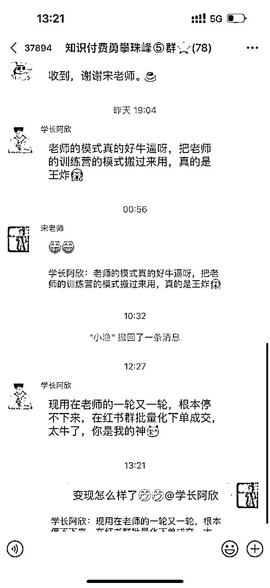

来源：https://b16xnqwk20.feishu.cn/docx/PBuidkuXpoXNGuxHsY1caWJsnWd
全文4100字
推荐用时：4min
首先很感谢大家支持，有机会生财能分享，我是宋老师（账号叫宋老师帮你做课），全网10W+粉丝，在做课卖课赛道深耕2年多
今天给大家分享下，我们关于【小红书单月卖课10W】的实操经验
因为最近小红书流量又变大了，就是我个人的感受，包括我们最近起的几个 IP 流量都还不错
只要是封面不一样的，都是有批量起的号。我们大概两周时间能干到 2000- 3000 粉丝，其实粉丝量还一般，但是我们基本 2000- 3000 粉丝能卖出几十单的课。
效果还是不错的。所以我觉得小红书起号的难度目前不高。
这些都是我们批量起的矩阵号，如下图👇
很多抖音、小红书做知识付费的小伙伴可能知道我，简短的自我介绍一下，便于大家快速知道我的价值
我的四个标签：
1.目前自媒体头部的做课&卖课博主→流量能力
2.原来的新东方总监，最高记录同步管理80w学生社群→教学能力
3.6000多位知识博主的老师→成绩
4.很多百万博主背后做课的男人
最后，我理解的小红书，其实是高客单的鱼塘，每一个人都有机会投入到其中，只需掌握方法打，薯店、私域就会自动出单，卖课百万，今天来聊聊小红书的打法
今天主要分享几个我从0-1起盘小红书的核心方法论
1.为什么知识博主今年必做小红书？
2.小红书起盘的4大核心法门
先说数据，小红书现在目前月活 2.8亿，抖音现在应该是 8 个多亿，然后小红书现在还是 4000 万出头的创作者。然后抖音现在目前是 3 个亿以上的创作者。
很多老师认为抖音好做，都在入局抖音，内卷严重，有些赛道不好做。但你不要觉得小红书的用户群小，要注意一个问题，小红书用户群虽说少，但是你备不住创作者也少，发视频、发笔记的人很少。而且还有一个数据跟大家同步一下，小红书现在目前直播的博主在总体博主里面不到15%，这是真实数据。
还有一个数据，小红书直播没有什么流量，除非你是个直播能力很强的人，你的品正好是符合小红书调性。但是小红书今年一定会开启直播这个版块的，但是小红书正好弥补了一个错位，小红书大多数都是 90 后左右，就是 80 - 95 区间，消费购买力是最强的。
所以抖音针对的中青年，抖音的群体无限大，抖音的流量边界也无限大，所以它没有什么严格的意义标签，只要你内容好就能起来。视频号是中老年，所以大家区分这两个，这三个年龄层，看你的品到底适不适合干。
小红书 4000 万创作者➗ 2.6 亿用户≈17%
抖音大概是3亿创作者➗ 8 亿用户≈40%
100 个人里面 17 个是小红书的创作者， 100 个人抖音用户里面 40 个人是在抖音拍视频赚钱的，所以天然竞争难度就不一样。
所以小红书天然是一个我认为的流量洼地，价值洼地。所以 83% 的用户 VS 60% 的用户，从成功概率来讲的话，小红书要更高一点，
而且小红书今年目前我们合作的几个盘的起盘率大概在100%，小红书目前没有失手过
最近很多学员跟我报喜，在小红书拿到了高客单。

我们创业的过程，就是找平台的过程，其实本质就是找势的过程，当你势在的时候，你的努力就会成杠杆的倍增。我给大家讲一个数据，我们现在抖音 10 万粉丝，小红书4万粉丝，今年我们1万以上客单价的合作，或者说1V1，我们小红书占比大概是抖音的一半，各占 50%
但是其实我们的变现来讲的话，小红书给我们带来的高客单更高，而且很多是高知女性特别多。所以我认为小红书如果你是做高客单的，比方说你是做税务筹划的、管理咨询的、商业全案的，包括您是做帮老板去建立养生机制的，所以高客单是天堂，在小红书是天堂，信任力极强，
我给大家看一下小红书的信任有多猛。这个是我截了几张小红书后台的图，都是后台咨询的人，就是要买课，你看他都很直接，想了解做课训练营是怎么样的。很精准，90%都可以成交
所以小红书的粉丝跟抖音粉丝不一样，抖音里面很多是需要你去筛选的，淘汰的过程。但是小红书真的是不一样，和他们聊天的频次就会明显的缩短。就是你在抖音里面成交一个客户，你可能要小要聊 20 句，在那小红书里面成交一个客户只可能只需要聊 5 句，如果你有幸聊了 10 句以上，打个电话没准他就成交一个高客单了。
所以这就是为什么小红书他的变现能力强的原因，因为这些人天然有付费意识
小红书
优点： 缺点：
人少 忠粉少
封面为王 粉丝活跃周期短
对于完播率不严格 成交路径复杂
可以用稍长的视频 要有一定的私域能力
抖音
优点： 缺点：
粉丝量大 起号难
忠粉多 对内容的敏感度高
容易上大流量 对于完播率要求高
卖课丝滑 要有很强的文案能力
什么样的账号在小红书能火？
分清四个定位
赛道定位---确定行业天花板与对标账号，定赛道是重中之重，如果这个行业都没有做的好的，那你做这件事的难度就很大，连抄的同行都没有，更别说起号了
商业定位---确定变现方式搭建变现闭环，思考好搭建赛道的商业闭环，是做带货、卖课，还是接广告，每个账号的类型各不相同
账号定位---确定ip人设与个人页展示，这个就是计划做口播视频博主，还是选择图文发布。个人建议做知识付费的老师，露脸还是比较重要的
个人反思---是不是做自己，每天演的累不累。账号就是未来几个月，后者几年要经营的，喜欢很重要
再给大家分享个核心的要义----对标的三要素
1.他是不是最近半年起的？
2.他真的比你牛么？
3.他赚钱么？
找定位的本质条件是你要找对标，因为你要确定这个事情是不是能赚钱，且是不是最近有人在赚钱，且这个赚钱的人是不是你能够跟他去媲美？这 3 件事情很重要
我在【做课】赛道在全平台、抖音、小红书、视频号、快手包括私域，我们至少吃了75%的份额。
所以其实头部已经吃掉了大部分的份额了。这个时候你在进场的难度很大，而且我们是做了两年的号，这区间内没有再起到一个很大的做课的号，所以这个赛道目前已经到饱和阶段了。同理你要甄别现在的状态，先看能不能进场
三要素都满足，可以考虑进一步做
怎么找同行？首先我给大家看一下我们IP 起盘的过程中，我们大概需要做哪些？
我们先会先扒一下这个行业综合的数据。比方前两天我们看了一下唱歌，因为想进中老年这唱歌这个领域，然后看了一下中老年唱歌这个领域的综合数据和情况

给大家分享下采集的流程
1.先找到关键词，举个例子。老年人歌唱，然后按图搜索，之后分享链接即可
2.复制到后羿采集器（免费的神器），右下角开始采集，之后会导出表格
3.看表格数据，能找到低粉高赞的视频，之后可以用轻抖拆解他们的文案，你也能出爆款
爆过的还能爆（最好是三个月内）
表格稍微有点复杂，还有深度采集的进阶玩法，还能采集粉丝，发布时间，需要老师们钻研一下。有后羿采集器使用高手也欢迎交流🤝
我们用它去起小红书的号，屡试不爽。我就跟大家讲，就这个事情我放到线下课去讲的话，其实现场带着各位去实操，我至少能卖一个2980，问题不大，因为他的成功率真的太高了，只是读懂他的人成功率真的很高。
然后我跟大家说一下具体我们该怎么用它去抄对标的视频，我来说一下这个逻辑，大家也不要觉得抄对标视频很低级，本质上你是要看爆款去出爆款的，而不是说你自己闷头苦干不出来的，前期就是模仿，像素级的抄他的封面、文案等等。
我跟大家讲，抄不明白的本质是你抄错了东西，把一些不该抄的地方抄了。
我给大家看一条数据，最近我跑了一条比较好的一条数据，是我大号爆的视频，采集到之后，我的矩阵号操盘手，重新洗的文案，洗我自己大号的
大家看下对比图，爆过的视频会反复爆，换个平台也能爆👇
前期一定不要想着原创，很难起来
昵称、头像、背景图、简介、小红书号
简介部分，可以写上核心标签，专业背书，提供产品，引流方式
前期就是找对标像素级看
名字--- 一眼清晰知道做什么？
简介--- 少即是多，≠简历，＝解药
场景服装---不断进化...
封面是小红书最重要的，没有之一
· 封面打开率差距会差50%以上
· 小红书都是颜控
· 取悦女性用户
做一个对比就能看出来，做的太差的封面，必然没有流量。封面可以去可画、醒图找模板，或者是找一个专业的美工设计，封面决定了打开率
VS
我特意做了一个小红书封面的模板，可以像素级模仿
封面找得再好，标题写得很水，有时候能让你一天的辛苦瞬间化为泡影。所以标题能让你决定，决定很多的问题，就是标题决定了造成你这个东西确实，传播不出去
给大家看一个我的实操案例，完全相同的文案。第一次很随意的发出去了，看效果不好，我又打磨了一下。
AI 版WPS，这不是重点，我换了一个词叫杀疯了，小红书最喜欢有情绪价值的，变成了文字钉，点赞翻了几倍
这是我的另一个爆款标题，完全相同的文案。就是标题做了优化，点赞翻了几十倍
送给大家一个秘诀，只要标题中包含这几个钥匙，想不爆都难---这是我的线下课的核心重点
（1）【短】尽可能短
（2）【数】能用数字用数字
（3）【符】能用符号用符号 VS =
（4）【同】去搜索同行爆过的
（5）【大】重点要突出放大，颜色要做反差，标红、标黄
人群极度的重要，跟大家说小红书人设决定一切，你进到小红书那刹那起，你记住你就是个老师，你的逼格就要提高一点。别人找你问题，这种问题一般的你不要答，这种人都是白嫖党
拍摄的选题一定是有转化意义的，
我的选题都会选择和变现最近的
第一类，干货类；第二类，数字类；第三类，反认知类
常用的选题是录课、xx课程变现xx元，盗版课，赛道，工具，AI，私域，直播 等等

你可以看下适合自己赛道，且离变现最近的找，刚刚分享的后羿采集器，就是最好的神器，多用起来
产品满足需求，人群决定定价
小红书卖课一共两条路径
1.引导私域做成交，占比90%
2.薯店自动成交，占比10%
今年的利好消息就是可以薯店卖课了，但是没有形成闭环，扣点也比较高，主战场还是私域成交
首先要学会下钩子，也就是短视频中，评论区都要留资料
如图所示，有资料的最好打印出来，纸质版的更让人想领
分享几个常用的引流玩法，也是集众家之所长，希望看到更多的分享
每一篇笔记都要挂上群聊，这是目前最安全的导流方式
当然群名也有讲究
进群安排xxx，学习+微信号，领取xxx，点这里领xxx，xxx卖课训练营
让他们发666，或者某个简单的钩子
然后@小号，或者发粉丝群的链接
小技巧，发表情包限流的概率更低，还可以发笔记也没问题
这种方式更明显，而且转发笔记也没问题，除非是同行举报（助理号）
可以用语音回复，或者是表情包，笔记推送
这就是大概加微信号的一些流程和方法
好了，今天的分享就到这，无论你是企业老板还是个人博主，其实我觉得知识付费都是一门极低成本，极高收入的好事，这个行业的利润在75%以上，老板可以做课程，输出你的产品或者管理思维，用课来征服合作伙伴
个人博主可以做课程增加收入，提高粉丝粘性和后端合作
欢迎大家有知识付费问题找我讨论
23年抖音竞争越发激烈，很难再做突破，而小红书还没有出现一个头部博主；抖音你有1w粉可能变现1w很难，而小红书你有1w粉就能变现10w,。
选择＞努力，平台是决定你翻身最好的机会
希望大家，2023红薯生财，感谢看到这的每一位老师
我是宋老师，23年帮助500位老师卖课50w，欢迎和我一起红书生财！